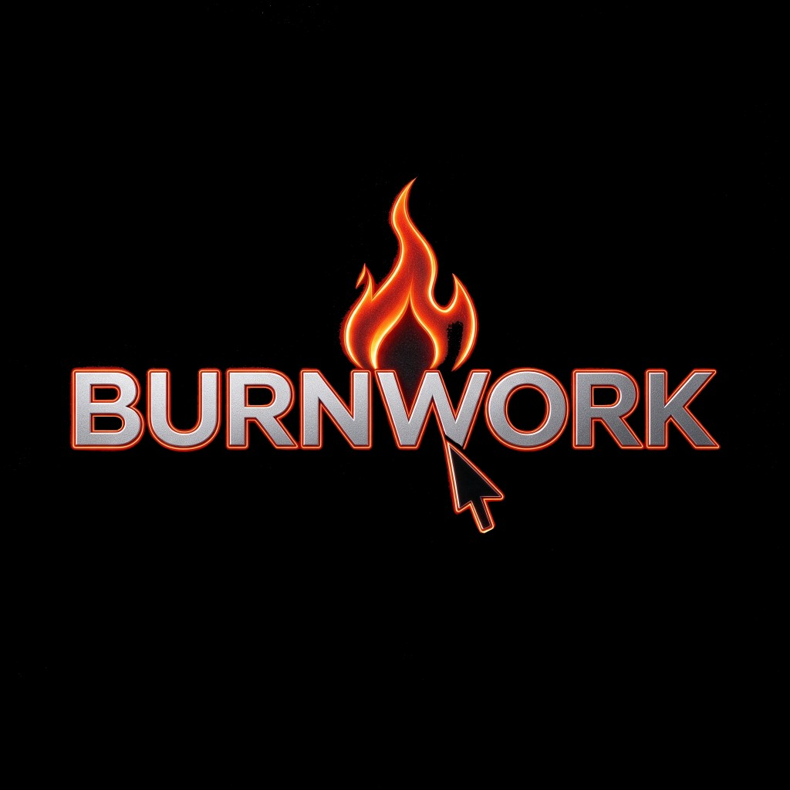

技能创作中枢
在本机理解原文与创意，拆解角色、剧本和分镜，并把每一步组织成可继续执行的任务。
- 创意与小说解析
- 剧本和分镜编排
- 可检查、可迭代的任务流
BURNWORK STUDIO · 本机短剧工作台
本机技能理解原文与创意，拆解剧本、角色与分镜；自部署 ComfyUI 承接图像与视频。项目、素材和创作记录留在你的设备里。

BURNWORK
把脑海里的画面，交给 BURNWORK 拍出来
LOCAL PRODUCTION STACK
不是把功能堆在一起，而是让故事、资产和生成任务在同一个项目里持续向前。
在本机理解原文与创意，拆解角色、剧本和分镜，并把每一步组织成可继续执行的任务。
连接你配置的自部署 ComfyUI，统一承接角色、美术、分镜图片和视频生成。
每集五份 Markdown 就是创作事实；素材、引用与生成记录持续沉淀，跨镜头复用。
FROM STORY TO SHOT
每一步都有明确的数据、状态和下一步，不再靠散落的提示词维持项目。
导入小说，或从一句镜头、一段故事开始；也可拖入参考图。
先出创作计划，再写剧本、角色、美术和镜头结构。
角色、场景、道具与参考图形成可复用资产，连续性写进文件。
图片和视频先预览参数与路径，明确确认后才交给 ComfyUI。
UPDATES INCLUDED
落在自己设备上的工作台：素材与创作记录默认不出境。技能库与工作室壳会继续迭代工作流和模型接入。
GET STARTED
核心工作台可按仓库自行编译使用；你连接的模型与算力费用由对应服务商收取。若日后提供付费支持包，购买页会单独标明。
MIT 上游 + 本机工作室壳。适合独立创作者把生产线留在自己设备上。
需要协助接入、流程定制或团队落地时，可另行沟通范围与报价。
UPDATES & SUPPORT
工作流与模型接入会持续迭代。政策与许可说明可在下列页面查阅。
READY FOR PRODUCTION
Windows 推荐独立窗口；非 Windows 可用浏览器对照页。上游技能套件以 MIT 开源。
编译并打开本机窗口，浏览五文档、对话与确认后生产。
scripts\open-studio.bat同一套项目后端，适合非 Windows 或对照调试。
py -3 skills/short-drama/scripts/studio_launch.py --open